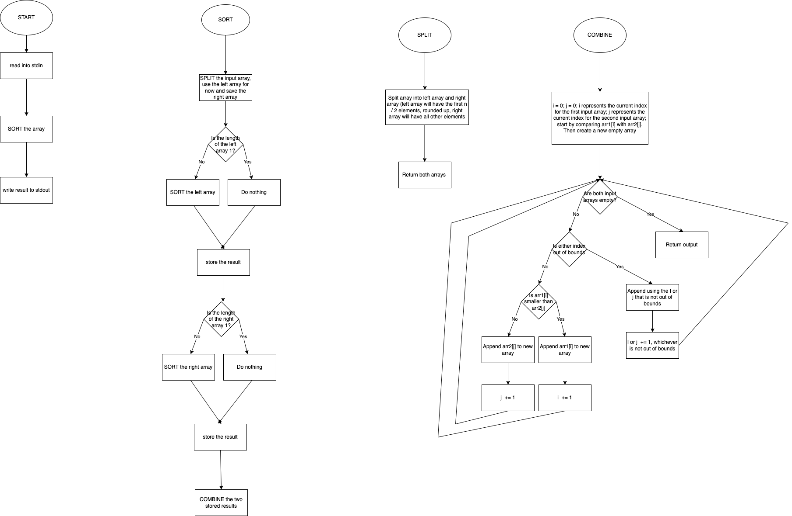
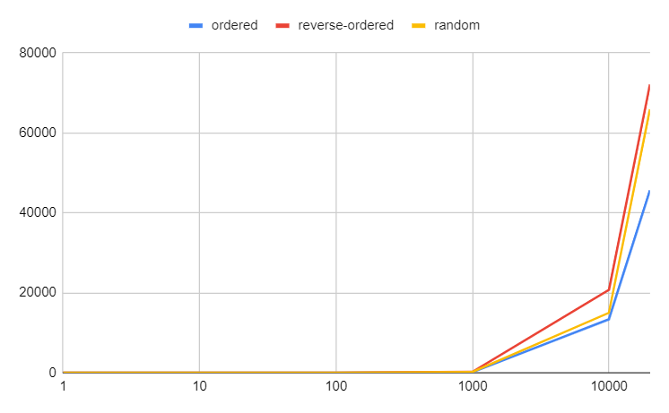
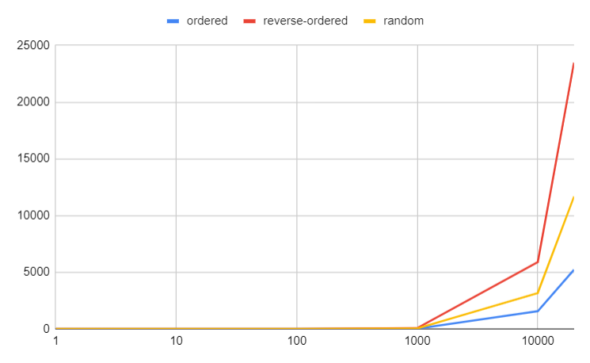
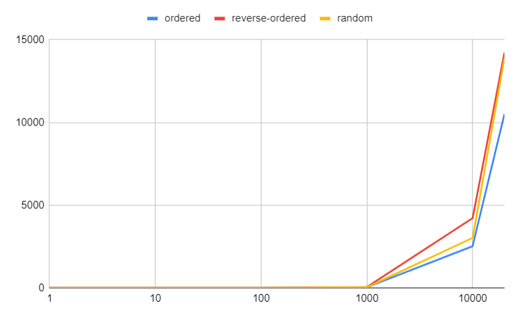

Group Members: Gautam Narayan, Jakob McPherson, Lilly Seeley, Daniel Joung
GitHub Repository Google Sheet (includes both the full sheet and the summary sheet)Flowchart showing the process behind our sorting algorithm

The three graphs below compare the speed of Bubble Sort, Insertion Sort, and Selection Sort when sorting ordered, reverse-ordered, and random text files. Each line represents the sorting times for a single file types. In all three graphs, the x-axis logarithmically displays the number of words being sorted and the y-axis linearly displays the average number of milliseconds to execute the sort.
The graphs indicate that all three algorithms can sort files of 1000 words or less very quickly, but that the time taken greatly increases from 1000 words to 10000 words and from 10000 words to 20000 words. Also, all three graphs show that sorting the ordered file is the quickest, followed by the random file, followed by the reverse-ordered file.
The graphs provide evidence that these three sorting algorithms work in a quadratic time complexity. In each graph, it takes about 2^2=4 times longer to sort a file of size 20000 than a file of size 10000


